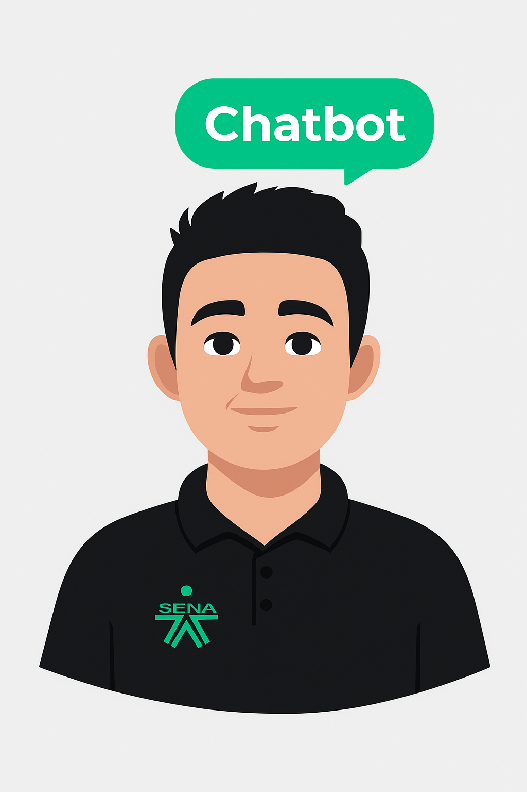

Ejemplos con el Verbo Modal
"WOULD"
Ejemplos por Tiempos Condicionales
1. Simple Conditional
I would eat pizza. — Yo comerÃa pizza.
🔊
She would dance at the party. — Ella bailarÃa en la fiesta.
🔊
They would travel next summer. — Ellos viajarÃan el próximo verano.
🔊
2. Conditional Continuous
I would be working now. — Yo estarÃa trabajando ahora.
🔊
He would be sleeping during the meeting. — Él estarÃa durmiendo durante la reunión.
🔊
We would be studying for the test. — EstarÃamos estudiando para el examen.
🔊
3. Perfect Conditional
I would have finished the project. — Yo habrÃa terminado el proyecto.
🔊
She would have called you. — Ella te habrÃa llamado.
🔊
They would have gone to the concert. — Ellos habrÃan ido al concierto.
🔊
4. Perfect Conditional Continuous
I would have been studying all night. — HabrÃa estado estudiando toda la noche.
🔊
He would have been working for hours. — Él habrÃa estado trabajando durante horas.
🔊
They would have been traveling since morning. — Ellos habrÃan estado viajando desde la mañana.
🔊
⟵ Volver al inicio

¡Hola! Estoy listo para ayudarte.
ES
EN
Voz predeterminada
🔊
🔽